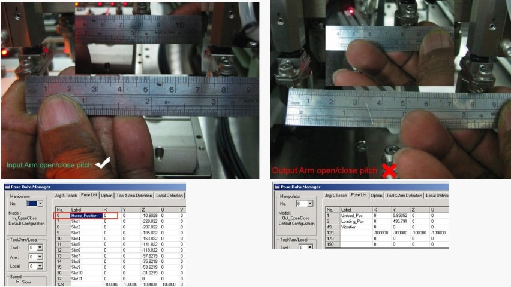

Service History
Subject: NS-8080 Output Hand X pitch open at 83mm
Handler Model: NS8080 (S/N: 182097 , IDT(M))
Controller: RC520
Date: 14 Jul 2011
Symptom
IDT(M) new NS-8080 Output Hand X pitch open at 83mm.

Action
Please backup point data.
1) Was setup file import from another handler or created new from this handler?
2) Did you try to delete and create new setup file based on EPSON default 5x5?
3) Variable pitch offset for output arm is 0?
4) Did you try to use EPSON default setup file?
83mm looks too big to be mechanical alignment issue unless hand bent?
It maybe just hand pitch point data out. (check robot 8 Output Hand Open/close SPEL Point)
1) Using shuttle 80x60 alignment jig, check if at least A&B or C&D is correct alignment. I don't think you can align mechanically for 3mm offset. Don't align mechanical yet. Just check if it is A,B in and C,D out or C,D in and A,B out for x direction.
2) Refer to teaching manual for NS8000 to teach hand pitch for output arm.
Cause
Wrong metal cone used(above cone is for NS-6000), but this is not the cause.
Problem due to customer import setup file from another handler, so this setup file corrupted caused output hands open at 83mm.
Remarks
After MCAL, Input and Output Hands should open to 80mm which is equivalent to 0 pulse.